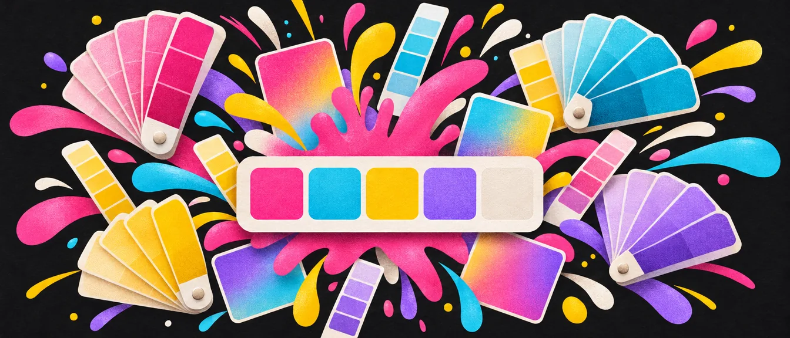
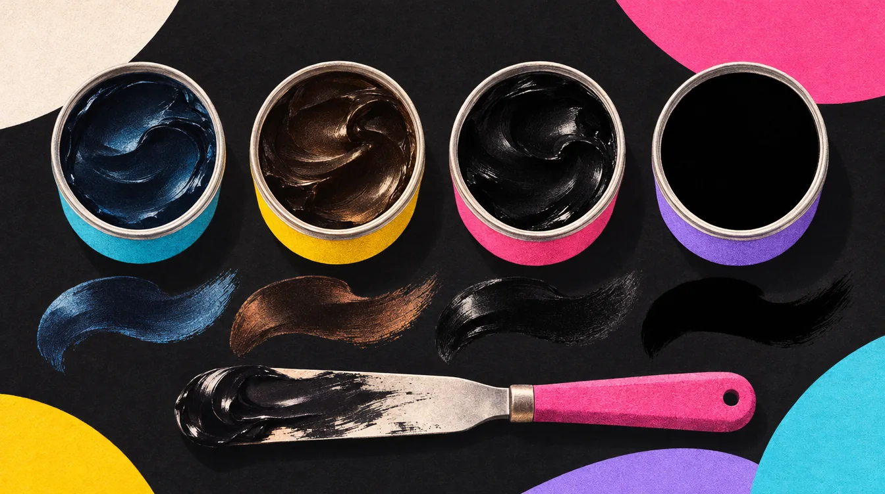
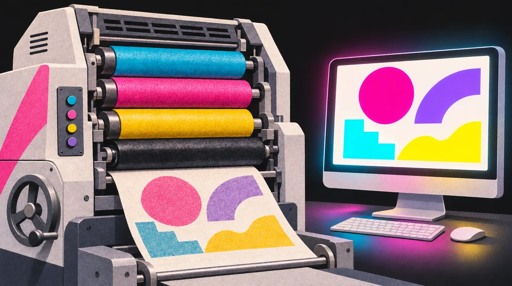

04 / 15
צבע
הצבעים יוצרים את הזהות החזותית של המותג ומעבירים את התחושה המרכזית שלו. צבע הוא לא רק אלמנט ויזואלי, הוא שפה רגשית. ובדרך הוא גם צריך לעבוד על מסך, על נייר, על רקע בהיר ועל רקע כהה.

פלטת צבעים: מערכת, לא אוסף
הצבעים יוצרים את הזהות החזותית של המותג ומעבירים את התחושה המרכזית שלו. הקפידו על הרמוניה בין הצבעים ובנו מערכת צבעים קבועה הכוללת:
- צבע ראשי: הצבע המזוהה ביותר עם המותג.
- צבע משני: משלים או מאזֵן את הצבע הראשי.
- פלטת צבעים משלימים: גוונים נוספים שמאפשרים גמישות עיצובית מבלי לפגוע באחידות.
צבע ראשיהכי מזוהה, הכי הרבה שטח
צבע משנימאזן ומשלים
משלימים והדגשהגמישות בלי לשבור את האחידות
בחרו פלטה מאוזנת: 2 צבעי בסיס ועוד 3 צבעים משלימים, שמשמשים לרוב לרקעים. בתוך הפלטה, שניים בהירים והשאר כהים, או להפך, בהתאם לאופי המותג ולתחושת האור/חושך הרצויה בעיצוב.
המטרה היא ליצור מערכת צבעים שיש בה גם רקעים רגועים וגם גווני הדגשה ברורים, כך שכל שימוש עיצובי, מטקסט ועד כפתור קריאה לפעולה, יישאר קריא, אחיד ונעים לעין.
כמה מכל צבע? חוק 60-30-10
פלטה טובה היא לא רק אילו צבעים, אלא גם כמה מכל אחד. כלל אצבע ותיק מעיצוב פנים: 60% צבע דומיננטי (רקעים ושטחים גדולים, לרוב ניטרלי), 30% צבע משני (כרטיסים, אזורים, ניווט), ו־10% צבע הדגשה (כפתורים, תגיות, קריאה לפעולה). הכוח של צבע ההדגשה בא דווקא מזה שהוא נדיר. ספוטיפיי, למשל: שחור, אפור כהה, וירוק אחד שמופיע רק איפה שצריך ללחוץ.
פסיכולוגיה של צבעים ותחושות
צבע הוא לא רק אלמנט ויזואלי. הוא שפה רגשית שמעבירה תחושות, ערכים ואישיות של מותג. הבחירה בצבעים משפיעה על איך הקהל תופס את המותג: אמין, צעיר, יוקרתי, טבעי, טכנולוגי או רגוע. חשוב להבין גם את המוסכמות התרבותיות: צבע יכול לשדר דבר אחד בישראל ודבר שונה לחלוטין בתרבות אחרת.
דוגמאות ותחושות מקובלות בצבעים
| צבע | תחושות עיקריות | שימושים נפוצים |
|---|---|---|
| אדום | אנרגיה, תשוקה, דחיפות, סכנה | מבצעים, מזון, ספורט, מותגים שמעוניינים לעורר פעולה (Coca-Cola, Netflix) |
| כתום | חום, יצירתיות, התלהבות, נגישות | סטארטאפים, חינוך, בידור, מותגים קלילים (Fanta, SoundCloud) |
| צהוב | שמחה, אופטימיות, אנרגיה, תשומת לב | מותגים צעירים או מעוררי השראה (McDonald’s, IKEA) |
| ירוק | טבע, בריאות, צמיחה, יציבות | מזון טבעי, קיימות, בנקים, בריאות (Starbucks, Whole Foods) |
| תכלת / כחול בהיר | שלווה, טכנולוגיה, אמון, ניקיון | טכנולוגיה, ביטוח, רפואה (Facebook, PayPal) |
| כחול כהה | אמינות, ביטחון, מקצועיות | מוסדות, בנקים, חברות טכנולוגיה ותעשייה (IBM, Intel) |
| סגול | יצירתיות, מיסטיות, יוקרה, השראה | אמנות, קוסמטיקה, טכנולוגיות חדשניות (Twitch, Yahoo) |
| ורוד | רוך, רגש, נעורים, אסתטיקה | מותגים נשיים, אופנה, טיפוח (Barbie, Glossier) |
| שחור | עוצמה, יוקרה, דרמה, אלגנטיות | מותגי יוקרה, אופנה, רכב (Chanel, Nike) |
| לבן | ניקיון, פשטות, שקיפות, מודרניות | בריאות, טכנולוגיה, עיצוב מינימליסטי (Apple) |
| אפור | יציבות, איזון, מקצועיות | רקעים, טכנולוגיה, מותגים מאופקים (Mercedes-Benz) |
| חום / בז’ | טבעיות, חום אנושי, אמינות | מזון, מוצרים טבעיים, קפה, עור (Nespresso, Timberland) |
מפת התחושות
הורדת המפה (PDF)
פסיכולוגיה של צבעים
לחצו על מילה כדי לראות אילו צבעים נוספים משדרים אותה. לחצו על שם של צבע כדי להתמקד בו.
על בסיס המפה של sibilaribeiro.com, בתרגום לעברית.
אותו צבע, תרבות אחרת
הנה כמה דוגמאות לזה שצבע „מתורגם” אחרת בכל מקום:
- אדום: בסין מזל ושגשוג (כלות מתחתנות באדום), במזרח התיכון גם סכנה.
- לבן: במערב טוהר, במזרח אסיה צבע של אבל ומוות.
- ירוק: באסלאם צבע מקודש, ובסין „כובע ירוק” הוא רמז לבגידה.
- צהוב: באמריקה הלטינית ובמצרים צבע של אבל, בתאילנד צבע מלכותי.
ובכל זאת, המחקר מראה שמה שקובע יותר מכל טבלה הוא כמה הצבע מתאים למותג הספציפי. אדום לבנק נמוך עלויות יכול לעבוד מצוין, אם הוא מתאים לאישיות שבניתם.
טיפים חשובים בבחירת צבעים
- השתמשו בצבע ראשי חזק ומזוהה שישדר את ליבת המותג.
- הוסיפו צבע משני שמאזן או מחזק את הראשי.
- ודאו שיש מספיק ניגודיות בין צבעי טקסט לרקע. זה קריטי לנגישות ולקריאות.
- שמרו על עקביות צבעונית בין פלטפורמות: אתר, רשתות, דפוס וכו’.
- הקפידו על פלטה מאוזנת: צבעי רקע רגועים וצבעי הדגשה (Accent) שמושכים תשומת לב.
בהירים וכהים שעובדים יחד
בחרו כמה גוונים בהירים וכהים שיכולים לעבוד זה עם זה כרקע וכתוכן, תוך שמירה על ניגודיות מספקת וקריאה. כלומר: חשוב שהצבעים לא רק ייראו יפים זה לצד זה, אלא גם יאפשרו לטקסט ולפרטים גרפיים להיות ברורים ונגישים בכל גודל ובכל מדיה.
גוונים בהירים מתאימים לרקעים שקטים ולתחושת מרחב וניקיון, בעוד שגוונים כהים מספקים עומק ויציבות. כאשר משלבים ביניהם נכון, מתקבלת היררכיה חזותית ברורה: טקסטים קריאים, כפתורים מודגשים ואלמנטים בולטים במידה הנכונה.
לבדוק ניגודיות במקום לנחש
אם רוצים להיות מאוד מדויקים, אז אפשר ומומלץ לבדוק את רמת הניגודיות בין צבעי טקסט לרקע בעזרת כלים ייעודיים (Contrast Checker) ולוודא שהם עומדים בתקן נגישות (כמו WCAG). שילוב נכון של בהיר וכהה יבטיח לא רק אסתטיקה טובה, אלא גם חוויית משתמש מקצועית ונגישה.
המספרים שהתקן מבקש (רמה AA): יחס של לפחות 4.5:1 לטקסט רגיל, ו־3:1 לטקסט גדול (בערך מ־24px, או 19px מודגש). רמה AAA מחמירה יותר: 7:1. דוגמה שמפתיעה סטודנטים: אדום טהור #FF0000 על לבן מגיע רק ל־4:1, כלומר נכשל בטקסט רגיל. לוגואים פטורים מהדרישה, שאר השימושים בצבעי המותג לא.
לא להמציא את הגלגל
כל שילובי הצבעים הטובים כבר הומצאו. אין צורך להמציא את הגלגל מחדש. במקום לנסות להרכיב פלטה מאפס, חפשו השראה מפלטות צבעים מוכנות של מותגים, מעצבים או מאתרים מקצועיים (כמו Coolors, Adobe Color או Muzli Colors). רק לא לשכוח לבצע המרה לצבעי דפוס CMYK אם העבודה כן מיועדת לדפוס ולא רק מתקיימת במרחב הדיגיטלי. צבעי דפוס
Coolors
מחולל מהיר
רווח מחליף פלטה, נועלים את הצבעים שאהבתם וממשיכים.
Adobe Color
גלגל הרמוניות
משלים, אנלוגי, טריאדי. מסונכרן לספריות של אדובי.
Muzli Colors
פלטה על ממשק
רואים מיד איך הפלטה נראית על מסך אמיתי.
ככה זה נראה בעמודי מיתוג
דוגמאות של פלטות צבעים בעמודי מיתוג. שימו לב לשמות לצבעים, לקודים שמופיעים ליד כל צבע, ולגודל השונה של כל צבע בעמוד, שמרמז כמה ממנו להשתמש.


טיפ
לא חובה להשתמש אך ורק בצבעים של הלוגו בכל המיתוג. אפשר ואף מומלץ לעבוד גם עם גוונים קרובים או וריאציות רכות של צבעי הלוגו, כדי ליצור עומק, גיוון והרמוניה ויזואלית מבלי לפגוע בזיהוי המותג.
למשל: עמוד מתוך ספר המותג של BDOO


שימו לב להוראות: הצבע של הלוגו יהיה בשימוש רק עבור הלוגו. וליד כל צבע כתוב בדיוק למה הוא משמש: רקע, טקסט, אלמנטים גרפיים.
הימנעו מלבן נקי ושחור מוחלט
צבע לבן טהור (#FFFFFF) ושחור מוחלט (בדיגיטל #000000 או בדפוס 100K) יוצרים ניגודיות חדה מדי לעין: הלבן עלול להיראות בוהק ומעייף, והשחור עשוי להיראות כבד ו„חונק” את העיצוב. צבעים מוחלטים לרוב נראים קשים, לא טבעיים ולעיתים גם לא מודרניים. במקום זאת, העדיפו לעבוד עם גוונים רכים יותר:
- אפור בהיר במקום לבן (למשל #F5F5F5)
- אפור כהה או כחול־שחור במקום שחור מלא (למשל #1A1A1A או #222831)
- או לחלופין: השתמשו בגוונים בהירים וכהים של צבעי המותג כדי ליצור עומק והרמוניה.
יחד עם זאת, שחור ולבן הם צבעי בסיס אוניברסליים וניטרליים, וניתן לשלב אותם בצורה מאוזנת בעיצוב: כדי להדגיש ניגודיות, ליצור מינימליזם, או לשמור על תחושת ניקיון ומודרניות. אבל להפוך אותם לחלק מהשפה הצבעונית המרכזית של המותג זה לרוב פתרון פשוט מדי ולא יצירתי במיוחד. עדיף להראות עומק וגמישות באמצעות גוונים, לא רק ניגודים מוחלטים.
שחור לדפוס: יש יותר מאחד

בשחור לדפוס (CMYK) ניתן ליצור גוונים שונים של שחור באמצעות שילוב של צבעים נוספים, ולא רק ערך K (שחור) בודד. כך ניתן להוסיף עומק, חום או קור לשחור, בהתאם לאופי המותג ולעיצוב.
דוגמאות נפוצות
Pure Black
C0 M0 Y0 K100שחור טהור, מתאים לטקסטים ולפרטים קטנים.Rich Black (Neutral)
C40 M40 Y40 K100שחור עמוק ונקי, מתאים לרקעים.Cool Black
C50 K95נטייה כחולה, מעניק תחושת קרירות וטכנולוגיה.Warm Black
M30 Y10 K100נטייה חומה, מעניק תחושת יוקרה ועומק.הריבועים כאן הם הדמיה על מסך. ההבדל האמיתי בין השחורים מורגש רק על נייר.
טיפ נוסף
מומלץ לא להשתמש בשחור עשיר (Rich Black) לטקסטים קטנים, כדי למנוע חוסר רישום או טשטוש בהדפסה. מה שכן אפשר לעשות זה לשים טקסט שחור על מצב מיזוג Multiply: כך הוא מכפיל את הצבע שלו בהתאם לצבע הרקע שמתחתיו.
ולמה לא פשוט K100 לכל הרקע? כי שחור של צבע אחד על שטח גדול יוצא בדפוס אפרפר ושטוח. שחור עשיר מוסיף מתחתיו שכבה של צבעים אחרים, וזה מה שנותן את העומק.
קוד צבע לכל מערכת
אם המותג שלכם פועל גם בדפוס וגם בדיגיטל, מומלץ להגדיר ערכי צבע מדויקים לכל מערכת:
HEX / RGB
למסכים
אתר, אפליקציה, רשתות חברתיות, מצגות.
CMYK
לדפוס
כל מה שיוצא מבית דפוס: כרטיסים, פליירים, אריזות.
Pantone
לדיוק מוחלט
אם יש צבע מותג ייחודי שצריך לשמור עליו מדויק בכל הדפסה.
רוצים להראות הבנה רחבה בצבעים? הציגו פלטת צבעים שמציגה את הצבעים ב־RGB, CMYK, Pantone וקוד Hex. זה מה שמרצה רואה בעמוד צבעים מקצועי.
צבעים שהפכו לשם של מותג
כשצבע הוא הנכס הכי מזוהה של מותג, מגדירים לו קוד פנטון קבוע. כמה דוגמאות מפורסמות:
קוקה־קולה
PMS 484 C · #F40009הקוד המקובל: החברה לא מפרסמת קוד רשמיטיפאני
PMS 1837 C · #81D8D0סטארבקס
PMS 3425 C · #00704Aמקדונלד'ס
PMS 123 C · #FFC72CUPS
PMS 462 C · #644117ברבי
PMS 219 C · #E0218Aטיפאני היא מקרה מיוחד: פנטון יצרו לה מספר משלה, 1837, על שם השנה שבה החברה נוסדה.
לא להתעלם מצבעי דפוס

אי אפשר
אתם לא יכולים להראות פלטת צבעים שהיא RGB בלבד! ומיד לאחר מכן להראות מוצרי דפוס! זה בלתי אפשרי להדפיס את הצבעים הזרחניים האלה של RGB בלי שימוש בפנטון או בטכנולוגיות דפוס חדשות כמו HP Indigo (ElectroInk), וגם אז צריך להתייעץ עם בתי דפוס מומחים.
נכון שאפשר להמיר צבע מ־RGB ל־CMYK, אבל חשוב להבין שלא כל גוון ייראה אותו הדבר בכל מערכת צבע. מה שנראה מדויק על המסך לא תמיד יודפס באותה עוצמה, עומק או טונאליות.
על המסך (RGB)אחרי ההדפסה (CMYK)
למשל, גוון שחור חם או חום־כהה שמוצג עמוק וברור על המסך (RGB), עלול לצאת בהדפסה כגוון אפרפר, דהוי או „מלוכלך”, משום שמערכת ה־CMYK מבוססת על ערבוב פיזי של צבעים שמגביל את עומק התוצאה.
איך להתמודד עם זה
- תמיד בדקו את הצבעים גם ב־CMYK לפני שליחה לדפוס.
- צבעים רוויים או כהים במיוחד עלולים להשתנות. לכן חשוב לבצע בדיקות הדפסה מוקדמות (Proofs).
- מומלץ להדפיס מספר גרסאות של אותו הצבע (למשל 4–6 גוונים קרובים) על גיליון אחד, ואז לבחור את הגוון המדויק ביותר לאחר בדיקה בעין.
- לחלופין, השתמשו במדריך צבעים, CMYK Guide Book או Pantone, שזה בעצם הפתרון המושלם למיתוגים, כדי לקבל ייצוג אמין של איך הצבע ייראה בדפוס.
לדוגמה
צבע HEX #201A18 (שחור־חום) נראה כהה ועמוק על המסך (RGB 32, 26, 24), אבל בהדפסה (CMYK 68, 67, 67, 78) הוא נוטה לגוון מעורב ועמום. לכן מומלץ לבדוק גרסאות כהות יותר עד למציאת התוצאה הרצויה.